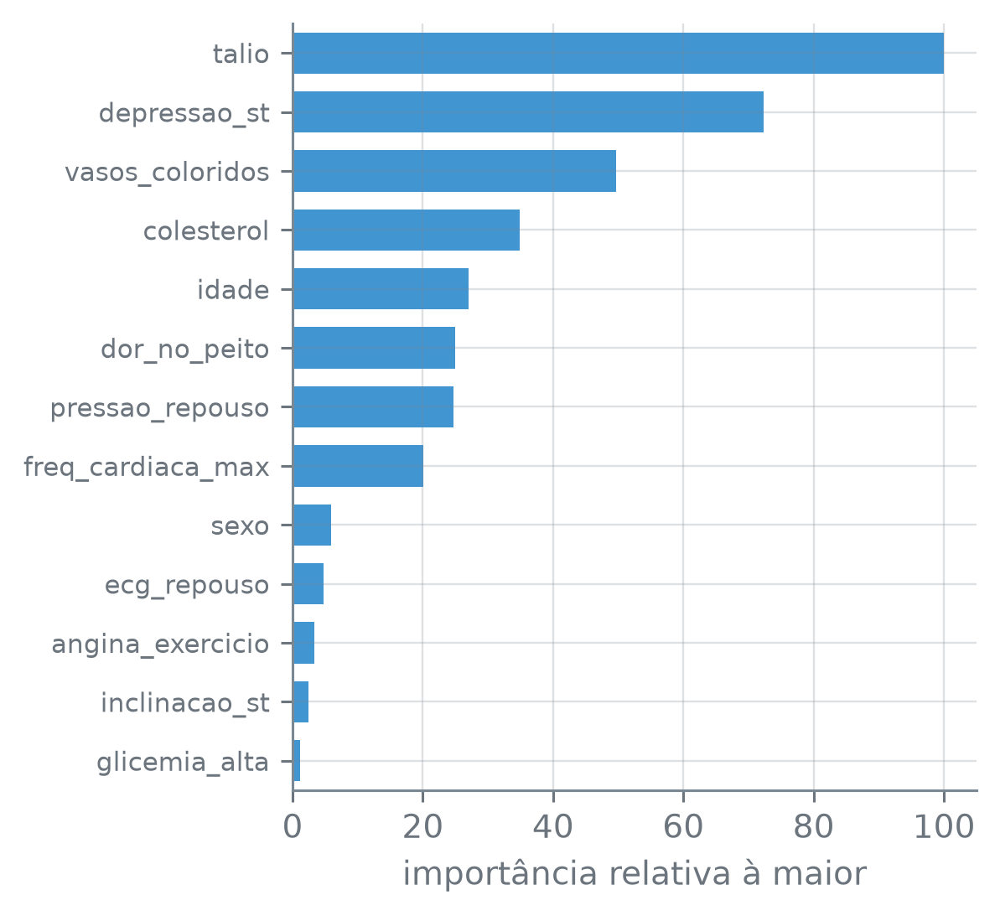

numero_br = lambda valor, casas=2: (
f"{valor:,.{casas}f}".replace(",", "_").replace(".", ",").replace("_", ".")
.replace("-", "−")
)Importância de Variáveis
Nota
Esta seção corresponde à seção 8.2.1 de James et al. (2023).
Uma árvore de decisão se lê de cima para baixo: a raiz diz qual coluna separa melhor as observações, e cada nó abaixo diz a pergunta seguinte. Uma floresta de 300 árvores não se lê desse jeito, e a previsão dela é uma média que nenhum desenho resume. Dá para saber, ao menos, em quais colunas o modelo se apoia?
A função numero_br escreve os números com a pontuação brasileira:
Quanto cada coluna reduz a impureza
Cada corte de uma árvore de classificação foi escolhido porque deixa os dois filhos mais puros que o nó, pelo índice de Gini da seção 12.3. A redução que o corte produz pesa pelo tamanho do nó: é o Gini do nó vezes o número de observações que chegam a ele, menos o mesmo produto nos dois filhos. Por causa desse peso, um corte na raiz, que separa todos os pacientes, conta mais que um corte num nó de poucos pacientes.
Somando essas reduções sobre os cortes que usam uma coluna, numa árvore, e depois tirando a média sobre as \(B\) árvores, cada coluna ganha um número.
A importância por redução de impureza de um preditor, num bagging ou numa floresta de \(B\) árvores, é a redução total do índice de Gini (em classificação) ou do RSS (em regressão) nos cortes que usam esse preditor, somada dentro de cada árvore; a importância é a média dessas somas nas \(B\) árvores. Um valor grande indica um preditor que o modelo usou muito para separar as observações de treino. Costuma-se mostrá-la relativa à maior, que vale 100.
Os pacientes do Heart são os da seção 13.2, com a mesma divisão: metade para o teste, sorteada com a semente 13 e com a mesma proporção de doentes nas duas metades. Desta vez as colunas de texto ficam como texto na tabela, e a troca por indicadoras vai para dentro do modelo:
coracao = pd.read_csv("dados/Heart.csv").dropna()
y_c = coracao["doenca_cardiaca"]
X_cru = coracao.drop(columns="doenca_cardiaca")
treino_X, teste_X, treino_y, teste_y = train_test_split(
X_cru, y_c, test_size=0.5, random_state=13, stratify=y_c)
print("treino:", len(treino_X), " teste:", len(teste_X))
print("colunas:", X_cru.shape[1])treino: 148 teste: 149
colunas: 13O modelo é um Pipeline de dois passos. O primeiro troca dor_no_peito e talio por uma indicadora para cada categoria e deixa as outras 11 das 13 colunas como estão; o segundo é o bagging de 300 árvores, isto é, a floresta com max_features=None:
indicadoras = make_column_transformer(
(OneHotEncoder(sparse_output=False), ["dor_no_peito", "talio"]),
remainder="passthrough", verbose_feature_names_out=False,
).set_output(transform="pandas")
modelo = make_pipeline(
indicadoras,
RandomForestClassifier(n_estimators=300, max_features=None,
random_state=13))
modelo.fit(treino_X, treino_y)
print("categorias de dor_no_peito:",
treino_X["dor_no_peito"].nunique())
print("colunas que as árvores veem:",
len(modelo[0].get_feature_names_out()))categorias de dor_no_peito: 4
colunas que as árvores veem: 18make_column_transformer((transformador, colunas), remainder, verbose_feature_names_out) — aplica cada transformador só às colunas da lista dele e junta o resultado numa tabela. Com remainder="passthrough", as outras colunas passam sem mudança; com verbose_feature_names_out=False, os nomes de saída não ganham prefixo. OneHotEncoder(sparse_output=False) — uma coluna de 0 e 1 para cada categoria; sparse_output=False devolve uma tabela comum, que é o que o .set_output(transform="pandas") precisa para montar um DataFrame com o nome de cada coluna.
make_pipeline(passo1, passo2) — encadeia os passos: no fit, cada passo aprende com a saída do anterior; no predict, os dados passam pelos mesmos passos, já ajustados. modelo[0] e modelo[-1] — o primeiro e o último passo. transformador.get_feature_names_out() — os nomes das colunas que o passo ajustado produz. s.nunique() — o número de valores distintos.
As 13 colunas viraram 18: cada categoria de dor_no_peito e de talio virou uma indicadora, quatro para dor_no_peito. A floresta, modelo[-1], guarda uma importância por coluna que viu, em feature_importances_. O chunk soma as indicadoras de volta na coluna de origem, para ter um número por coluna da tabela, e divide pela maior:
por_indicadora = pd.Series(modelo[-1].feature_importances_,
index=modelo[0].get_feature_names_out())
origem = lambda nome: ("dor_no_peito" if nome.startswith("dor_no_peito")
else "talio" if nome.startswith("talio") else nome)
mdi = por_indicadora.groupby(origem).sum()
print("soma das importâncias = 1:", np.isclose(mdi.sum(), 1))
relativa = (100 * mdi / mdi.max()).sort_values(ascending=False)
print(relativa.map(lambda v: numero_br(v, 1)).to_string())soma das importâncias = 1: True
talio 100,0
depressao_st 72,3
vasos_coloridos 49,6
colesterol 34,8
idade 27,1
dor_no_peito 25,0
pressao_repouso 24,7
freq_cardiaca_max 20,0
sexo 5,9
ecg_repouso 4,7
angina_exercicio 3,3
inclinacao_st 2,4
glicemia_alta 1,2modelo[-1].feature_importances_ — a importância por redução de impureza de cada coluna que o modelo viu, na ordem das colunas, já como fração do total: as importâncias somam 1.
s.groupby(funcao).sum() — aplica a função a cada rótulo da série, junta os rótulos que dão o mesmo resultado e soma os valores de cada grupo; aqui, as indicadoras de dor_no_peito somam na dor_no_peito, e as de talio, na talio.
A coluna de maior importância é talio, o exame com tálio, seguida de depressao_st e de vasos_coloridos; colesterol vem em quarto lugar, com 34,8 contra 100 de talio, e glicemia_alta, a última, fica em 1,2.
fig, ax = plt.subplots(figsize=(4.4, 4.0))
ax.barh(range(len(relativa)), relativa.values, color="C0", height=0.7)
ax.set_yticks(range(len(relativa)), relativa.index, fontsize=8)
ax.set_ylim(len(relativa) - 0.5, -0.5)
ax.set_xlim(0, 105)
ax.set_xlabel("importância relativa à maior")
plt.tight_layout()
plt.show()
Heart, no bagging de 300 árvores ajustado nos 148 pacientes de treino, relativa à maior (100). As indicadoras de dor_no_peito e de talio estão somadas na coluna de origem.
ax.set_ylim(baixo, cima) — os limites do eixo vertical; com o de baixo maior que o de cima, o eixo se inverte e a primeira barra, a de maior importância, fica no alto.
Essa importância é calculada com os pacientes de treino, os mesmos que as árvores usaram para escolher os cortes.
Quanto o acerto cai se a coluna for embaralhada
colesterol aparece em quarto lugar. O modelo precisa dele para prever pacientes que não viu?
Uma forma de responder usa o teste. Embaralha-se uma coluna nos 149 pacientes de teste, deixando as outras como estão, e o modelo, já ajustado, prevê de novo. O embaralhamento quebra a ligação da coluna com a resposta e com as outras colunas e mantém os mesmos valores. Se o modelo depende da coluna, o acerto cai; se não depende, fica onde estava. A conta usa o teste, e não o treino, porque nos pacientes de treino as árvores já decoraram as respostas: a queda ali mediria o que o modelo memorizou, não o que serve para pacientes novos.
A importância por permutação de um preditor é a queda na medida de desempenho do modelo ajustado, num conjunto de dados, quando os valores desse preditor são embaralhados entre as observações e os demais ficam como estão. O embaralhamento se repete várias vezes, e a importância é a média das quedas. Ela vale para qualquer modelo, porque só usa as previsões.
O permutation_importance faz isso com o Pipeline inteiro, e é aqui que ter as indicadoras dentro do modelo importa: ele embaralha a coluna dor_no_peito da tabela, e as quatro indicadoras dela mudam juntas, como mudariam num paciente de verdade. A medida é o acerto no teste, e cada coluna é embaralhada 20 vezes:
perm = permutation_importance(modelo, teste_X, teste_y,
n_repeats=20, random_state=13)
queda = pd.DataFrame({"média": perm.importances_mean,
"desvio": perm.importances_std},
index=teste_X.columns)
queda = queda.loc[relativa.index]
print("acerto no teste:", numero_br(modelo.score(teste_X, teste_y), 4))
print(queda.map(lambda v: numero_br(v, 3)).to_string())acerto no teste: 0,7584
média desvio
talio 0,056 0,023
depressao_st 0,015 0,029
vasos_coloridos 0,026 0,018
colesterol −0,010 0,012
idade −0,011 0,007
dor_no_peito 0,008 0,012
pressao_repouso −0,002 0,006
freq_cardiaca_max 0,006 0,004
sexo 0,004 0,006
ecg_repouso 0,007 0,004
angina_exercicio 0,003 0,003
inclinacao_st 0,005 0,003
glicemia_alta 0,005 0,003permutation_importance(estimador, X, y, n_repeats, random_state) — embaralha cada coluna de X, uma por vez, n_repeats vezes, e mede a queda no score do estimador já ajustado; num classificador, o score é o acerto. Devolve um objeto com importances_mean, a média das quedas de cada coluna, importances_std, o desvio padrão delas entre as repetições, e importances, as quedas de cada repetição, uma linha por coluna. random_state fixa os embaralhamentos.
df.loc[rotulos] — as linhas na ordem da lista rotulos; aqui, a ordem da importância por impureza.
O acerto no teste, 0,7584, pode diferir em um paciente do bagging da seção 13.2, com a mesma divisão: as mesmas 18 colunas chegam às árvores em outra ordem, e a ordem muda os desempates entre cortes igualmente bons.
A tabela está na ordem da importância por impureza. Um paciente a mais ou a menos de acerto, em 149, muda a taxa em 1/149, cerca de 0,007. Embaralhar talio derruba o acerto em 0,056, em média, perto de oito pacientes (0,056 × 149 ≈ 8,3). Em depressao_st, o desvio entre as 20 repetições, 0,029, é maior que a média, 0,015. Na ordem da permutação, as colunas ficam assim:
por_permutacao = queda["média"].sort_values(ascending=False)
print("três primeiras:")
for coluna in por_permutacao.index[:3]:
print(" ", coluna)
print("média negativa:")
for coluna in por_permutacao.index[por_permutacao < 0]:
print(" ", coluna)
negativas = pd.Series((perm.importances < 0).sum(axis=1),
index=teste_X.columns)
print("repetições com queda negativa,")
for coluna in ["colesterol", "idade"]:
print(f" {coluna}: {negativas[coluna]} de 20")três primeiras:
talio
vasos_coloridos
depressao_st
média negativa:
pressao_repouso
colesterol
idade
repetições com queda negativa,
colesterol: 15 de 20
idade: 17 de 20(m < 0).sum(axis=1) — em cada linha de m, quantos valores são negativos; aqui, em quantas das 20 repetições o acerto subiu.
As três primeiras pela permutação são talio, vasos_coloridos e depressao_st. Embaralhar colesterol não derrubou o acerto: a média das 20 quedas é −0,010, e em 15 das 20 repetições o modelo acertou mais com a coluna embaralhada do que com ela intacta. Com idade, 17 de 20. Uma média de −0,010 é cerca de um paciente e meio em 149 (0,010 × 149 ≈ 1,5). Uma queda negativa não quer dizer que a coluna atrapalha em geral. As 20 repetições mudam só o embaralhamento: o modelo e os 149 pacientes de teste são sempre os mesmos. O que elas mostram é que, neste modelo e nestes pacientes, trocar o colesterol de cada um pelo de outro não piora o acerto; em média o melhora um pouco, e na maior parte das repetições também: os cortes que as árvores fizeram em colesterol não ajudam a prever estes pacientes de teste. Com outro sorteio dos pacientes de teste, a média poderia sair diferente.
fig, ax = plt.subplots(figsize=(4.4, 4.0))
posicoes = range(len(queda))
ax.barh(posicoes, queda["média"], color="C1", height=0.7)
ax.errorbar(queda["média"], posicoes, xerr=queda["desvio"],
fmt="none", ecolor="0.45", elinewidth=1, capsize=2)
ax.axvline(0, color="0.45", linewidth=0.8)
ax.set_yticks(posicoes, queda.index, fontsize=8)
ax.set_ylim(len(queda) - 0.5, -0.5)
ax.set_xlim(-0.03, 0.085)
ax.xaxis.set_major_locator(plt.MultipleLocator(0.02))
ax.set_xlabel("queda no acerto de teste")
ax.xaxis.set_major_formatter(lambda v, _: f"{v:.2f}".replace(".", ",")
.replace("-", "−"))
plt.tight_layout()
plt.show()![Gráfico de barras horizontais laranja com as mesmas 13 colunas da figura anterior, na mesma ordem, e a queda no acerto de −0,02 a 0,08 no eixo horizontal, com uma linha vertical no zero. A barra de talio, no alto, vai a cerca de 0,056; vasos_coloridos a cerca de 0,026; depressao_st a 0,015, com um traço cinza de desvio que atravessa o zero. As barras de colesterol e idade, quarta e quinta de cima, vão para a esquerda do zero, até cerca de −0,01; a de pressao_repouso, sétima, também fica à esquerda, mas quase não se vê. As barras das outras colunas de baixo são curtas, perto de 0,005.](05-importancia-de-variaveis_files/figure-html/fig-permutacao-output-1.png)
Heart quando cada coluna é embaralhada, média de 20 embaralhamentos, com um desvio padrão entre as repetições para cada lado (cinza). As colunas estão na ordem da importância por impureza da figura anterior. A linha vertical marca queda zero; à esquerda dela, o modelo acertou mais com a coluna embaralhada.
ax.errorbar(x, y, xerr, fmt="none", ecolor, elinewidth, capsize) — um traço horizontal de x - xerr a x + xerr em cada y; com fmt="none", sem marcador no centro. capsize é o tamanho da trava nas pontas. ax.axvline(x, color, linewidth) — uma linha vertical na posição x. ax.xaxis.set_major_locator(plt.MultipleLocator(0.02)) — põe uma marca no eixo horizontal a cada 0,02. ax.xaxis.set_major_formatter(funcao) — escreve os números dessas marcas com a função.
Por que colesterol fica em quarto lugar numa medida e abaixo de zero na outra? A importância por impureza soma os cortes no treino, inclusive os fundos, perto das folhas, onde restam poucos pacientes. O chunk percorre as 300 árvores e guarda, para cada corte, a coluna, o número de pacientes de treino no nó e a redução ponderada do Gini. Depois conta os cortes de cada coluna, mede que porcentagem da importância dela vem de nós com até 20 pacientes (a coluna %≤20) e conta os valores distintos da coluna no treino (a coluna dist.):
nomes = modelo[0].get_feature_names_out()
partes = []
for arvore in modelo[-1].estimators_:
t = arvore.tree_
peso = t.weighted_n_node_samples * t.impurity
no = np.flatnonzero(t.feature >= 0)
partes.append(pd.DataFrame({
"coluna": [origem(nomes[k]) for k in t.feature[no]],
"pacientes": t.n_node_samples[no],
"reducao": peso[no] - peso[t.children_left[no]]
- peso[t.children_right[no]]}))
cortes = pd.concat(partes)
pequenos = cortes[cortes["pacientes"] <= 20]
resumo = pd.DataFrame({
"cortes": cortes.groupby("coluna").size(),
"%≤20": 100 * pequenos.groupby("coluna")["reducao"].sum()
/ cortes.groupby("coluna")["reducao"].sum(),
"dist.": treino_X.nunique()})
linhas = list(relativa.index[:5]) + ["freq_cardiaca_max"]
print(resumo.loc[linhas].to_string(
formatters={"%≤20": lambda v: numero_br(v, 1)}))
print("mais valores distintos:")
print(" ", resumo["dist."].idxmax()) cortes %≤20 dist.
talio 326 2,1 3
depressao_st 822 21,5 30
vasos_coloridos 558 19,3 4
colesterol 775 62,7 100
idade 559 71,0 36
freq_cardiaca_max 479 76,6 69
mais valores distintos:
colesterolarvore.tree_ — a árvore ajustada, em vetores com uma posição por nó; tree_.feature >= 0 separa os nós que cortam das folhas. tree_.n_node_samples — as observações distintas da amostra bootstrap que chegam ao nó. tree_.weighted_n_node_samples — as mesmas, contadas com as repetições do sorteio. tree_.impurity — o Gini do nó.
pd.concat(tabelas) — empilha as tabelas. df.groupby(coluna).size() — o número de linhas de cada grupo. df.to_string(formatters) — a tabela como texto, com uma função de formatação para as colunas do dicionário. s.idxmax() — o rótulo do maior valor.
talio tem 326 cortes, e só 2,1% da importância dele vem de nós com até 20 pacientes: ele separa grupos grandes. colesterol tem 775 cortes, e 62,7% da importância dele vem desses nós pequenos; em idade, 71,0%. Cada corte num nó pequeno reduz pouco o Gini, porque o peso é pequeno, mas somados eles fazem a maior parte da importância dessas duas colunas. colesterol tem ainda 100 valores distintos nos 148 pacientes de treino, o maior número entre as 13 colunas. São 99 pontos de corte possíveis, um entre cada par de valores vizinhos, para separar os últimos pacientes de um nó.
Valores distintos e cortes fundos não bastam para decidir o sinal da permutação. freq_cardiaca_max tem 69 valores distintos e 76,6% da importância vinda de nós pequenos, e embaralhá-la derruba o acerto em 0,006, em média, perto de um paciente (0,006 × 149 ≈ 0,9).
As duas medidas respondem a perguntas diferentes. A importância por impureza mede quanto o modelo usou cada coluna para separar os pacientes de treino, até os últimos de cada nó. A por permutação mede quanto o acerto em pacientes novos depende da coluna; com 149 pacientes, ela varia de um embaralhamento para outro, como mostra o desvio de depressao_st.
Nenhuma das duas diz que o colesterol não tem relação com doença cardíaca. Com as outras colunas à mão, este modelo não se apoia nele para acertar esses pacientes.
Colunas que se substituem
As colunas de carreira do Hitters somam o que o jogador fez desde a estreia, e a seção 13.3 viu uma delas, vezes_ao_bastao_carreira, dominar as raízes do bagging. Duas colunas que carregam quase a mesma informação disputam os mesmos cortes. O que acontece com a importância de cada uma?
Os dados são os da seção 13.3: os jogadores com salário registrado, o logaritmo do salário como resposta e o treino de 132 jogadores sorteado com a semente 12.
hitters = pd.read_csv("dados/Hitters.csv").dropna()
y = np.log(hitters["salario"])
X = pd.get_dummies(hitters.drop(columns="salario"),
drop_first=True, dtype=float)
treino_Xh, teste_Xh, treino_yh, teste_yh = train_test_split(
X, y, train_size=132, random_state=12)
carreira = [c for c in X.columns if c.endswith("_carreira")]
correlacao = X["vezes_ao_bastao_carreira"].corr(X["rebatidas_carreira"])
print("jogadores:", len(X), " colunas:", X.shape[1])
print("treino:", len(treino_Xh), " teste:", len(teste_Xh))
print("colunas de carreira:", len(carreira))
print("correlação entre vezes ao bastão")
print(" e rebatidas na carreira:", numero_br(correlacao, 3))
print("menor correlação entre as seis:",
numero_br(X[carreira].corr().min().min(), 3))jogadores: 263 colunas: 19
treino: 132 teste: 131
colunas de carreira: 6
correlação entre vezes ao bastão
e rebatidas na carreira: 0,995
menor correlação entre as seis: 0,787s.corr(outra) — a correlação entre duas séries. df.corr() — a tabela das correlações entre cada par de colunas; .min().min() é a menor delas.
Vezes ao bastão e rebatidas na carreira têm correlação de 0,995 nos 263 jogadores: saber uma é quase saber a outra. Entre as seis colunas de carreira, a menor correlação é 0,787. O chunk ajusta duas florestas de 300 árvores, o bagging (\(m = p\)) e a floresta com \(m = 4\), e mede as duas importâncias para as seis colunas de carreira: a por impureza, relativa à maior entre as 19 colunas, e a por permutação nos 131 jogadores de teste, agora como aumento do MSE:
importancias = {}
for nome, m in [("bagging", None), ("floresta", 4)]:
ajuste = RandomForestRegressor(n_estimators=300, max_features=m,
random_state=13)
ajuste.fit(treino_Xh, treino_yh)
imp = pd.Series(ajuste.feature_importances_, index=X.columns)
perm_h = permutation_importance(
ajuste, teste_Xh, teste_yh, n_repeats=10, random_state=13,
scoring="neg_mean_squared_error")
importancias[nome] = (100 * imp / imp.max(), pd.Series(
perm_h.importances_mean, index=X.columns))
print(f"{nome}, maior:")
print(" ", imp.idxmax())
tabela = pd.DataFrame({nome: mdi_h[carreira].round()
for nome, (mdi_h, _) in importancias.items()})
tabela.index = [c.removesuffix("_carreira") for c in carreira]
print(tabela.astype(int).to_string())bagging, maior:
vezes_ao_bastao_carreira
floresta, maior:
vezes_ao_bastao_carreira
bagging floresta
vezes_ao_bastao 100 100
rebatidas 28 91
home_runs 5 39
corridas 27 78
impulsionadas 20 55
bases_por_bolas 55 92nomes_c = [c.removesuffix("_carreira") for c in carreira]
posicoes = np.arange(len(carreira))
fig, eixos = plt.subplots(2, 1, figsize=(4.4, 5.6))
for eixo, qual, rotulo in [(eixos[0], 0, "importância relativa à maior"),
(eixos[1], 1, "aumento do MSE de teste")]:
for desvio, (nome, cor) in zip([-0.2, 0.2], [("bagging", "C0"),
("floresta", "C2")]):
valores = importancias[nome][qual][carreira]
eixo.barh(posicoes + desvio, valores, height=0.38, color=cor,
label=nome)
eixo.set_yticks(posicoes, nomes_c, fontsize=8)
eixo.set_ylim(len(carreira) - 0.5, -0.5)
eixo.axvline(0, color="0.45", linewidth=0.8)
eixo.set_xlabel(rotulo)
eixo.xaxis.set_major_formatter(
lambda v, _: f"{v:g}".replace(".", ",").replace("-", "−"))
eixos[0].set_xlim(0, 105)
eixos[1].xaxis.set_major_locator(plt.MultipleLocator(0.05))
eixos[1].legend(loc="lower right", fontsize=8)
plt.tight_layout()
plt.show()![Dois gráficos de barras horizontais empilhados, com as mesmas seis colunas de carreira no eixo vertical e duas barras por coluna, azul para o bagging e verde para a floresta. No de cima, a importância por impureza de 0 a 100: vezes_ao_bastao chega a 100 nos dois modelos; no bagging, rebatidas fica perto de 30, home_runs perto de 5 e as outras entre 20 e 55; na floresta, as outras cinco barras verdes são mais longas que as azuis, rebatidas perto de 90. No de baixo, o aumento do MSE: no bagging, só vezes_ao_bastao tem barra longa, acima de 0,05, e as outras ficam perto do zero; na floresta, a barra de vezes_ao_bastao fica abaixo de 0,05, a de rebatidas passa de 0,01, e o aumento se divide entre várias colunas.](05-importancia-de-variaveis_files/figure-html/fig-carreira-output-1.png)
Hitters no bagging (azul) e na floresta com \(m = 4\) (verde), 300 árvores cada, ajustados nos 132 jogadores de treino; nos dois painéis, a cor marca o modelo, não a medida. Em cima, a importância por impureza relativa à maior das 19 colunas; embaixo, o aumento do MSE de teste nos 131 jogadores de teste quando a coluna é embaralhada, média de 10 embaralhamentos.
permutation_importance(..., scoring="neg_mean_squared_error") — mede a queda no MSE com sinal trocado, isto é, quanto o MSE de teste aumenta quando a coluna é embaralhada. s.astype(int) — a série convertida para inteiros; depois do round(), os valores arredondados sem o .0. Os nomes da tabela perdem o _carreira do fim, comum às seis colunas.
Nos dois modelos, a maior importância por impureza é a de vezes_ao_bastao_carreira. Os números da tabela podem mudar em uma unidade de um computador para outro. O chunk compara o que importa, com folga:
mdi_bag, perm_bag = importancias["bagging"]
mdi_flo, perm_flo = importancias["floresta"]
print("rebatidas na carreira, impureza:")
print(" bagging abaixo de 35:", mdi_bag["rebatidas_carreira"] < 35)
print(" floresta acima de 85:", mdi_flo["rebatidas_carreira"] > 85)
print("bagging, aumento do MSE ao embaralhar")
print(" vezes ao bastão, mais de 0,05:",
perm_bag["vezes_ao_bastao_carreira"] > 0.05)
print(" rebatidas, menos de 0,01:",
perm_bag["rebatidas_carreira"] < 0.01)
outras = [c for c in carreira if c != "vezes_ao_bastao_carreira"]
print("floresta, as outras cinco de carreira")
print(" sobem na impureza:",
(mdi_flo[outras] > mdi_bag[outras]).all())
print("floresta, aumento do MSE")
print(" vezes ao bastão < 0,05:",
perm_flo["vezes_ao_bastao_carreira"] < 0.05)
print(" rebatidas > 0,01:",
perm_flo["rebatidas_carreira"] > 0.01)rebatidas na carreira, impureza:
bagging abaixo de 35: True
floresta acima de 85: True
bagging, aumento do MSE ao embaralhar
vezes ao bastão, mais de 0,05: True
rebatidas, menos de 0,01: True
floresta, as outras cinco de carreira
sobem na impureza: True
floresta, aumento do MSE
vezes ao bastão < 0,05: True
rebatidas > 0,01: TrueNo bagging, em que toda divisão pode escolher qualquer coluna, rebatidas_carreira fica abaixo de 35 contra 100 de vezes_ao_bastao_carreira: com as duas entre as candidatas, um corte numa é quase tão bom quanto na outra, e a redução do corte vai inteira para a escolhida. Na floresta, rebatidas_carreira passa de 85, mas não sobe sozinha: as cinco colunas de carreira além de vezes_ao_bastao_carreira, que fica em 100 nos dois modelos, sobem todas. Com \(m = 4\), a coluna mais forte fica fora do sorteio em muitas divisões, e qualquer outra ganha os cortes que sobram. Por isso a subida de rebatidas_carreira na impureza não mostra que ela substitui a outra; para ver isso, compara-se a permutação nos dois modelos.
No bagging, embaralhar vezes_ao_bastao_carreira aumenta o MSE de teste em mais de 0,05, e embaralhar rebatidas_carreira, em menos de 0,01. As árvores do bagging cortam por vezes_ao_bastao_carreira, e embaralhá-la desfaz os cortes em que elas se apoiam; rebatidas_carreira diz quase o mesmo, mas as árvores já ajustadas não cortam nela no lugar. Embaralhar rebatidas_carreira custa pouco pelo motivo inverso: as árvores a usam bem menos, e vezes_ao_bastao_carreira, intacta, carrega a informação. Na floresta, o aumento do MSE ao embaralhar vezes_ao_bastao_carreira fica abaixo de 0,05, e o de rebatidas_carreira passa de 0,01. Com \(m = 4\), as árvores cortam em rebatidas_carreira nas divisões em que a outra não foi sorteada; embaralhar uma das duas desfaz só os cortes dela, e a outra segue carregando a informação nos cortes restantes. As duas dividem o trabalho.
Uma importância perto de zero, por qualquer das duas medidas, pode querer dizer que a coluna não ajuda a prever ou que outra coluna já diz o mesmo.
A importância de uma coluna é sempre a importância dela dadas as outras, num modelo ajustado com um treino. Ela não diz para que lado a coluna empurra a previsão: uma importância alta de talio não diz se um defeito no exame aumenta ou diminui a chance de doença. Nem diz que mudar o valor da coluna mudaria a resposta; mede quanto o modelo usa a coluna para prever.
James, Gareth, Daniela Witten, Trevor Hastie, Robert Tibshirani, e Jonathan Taylor. 2023. An Introduction to Statistical Learning with Applications in Python. Springer.